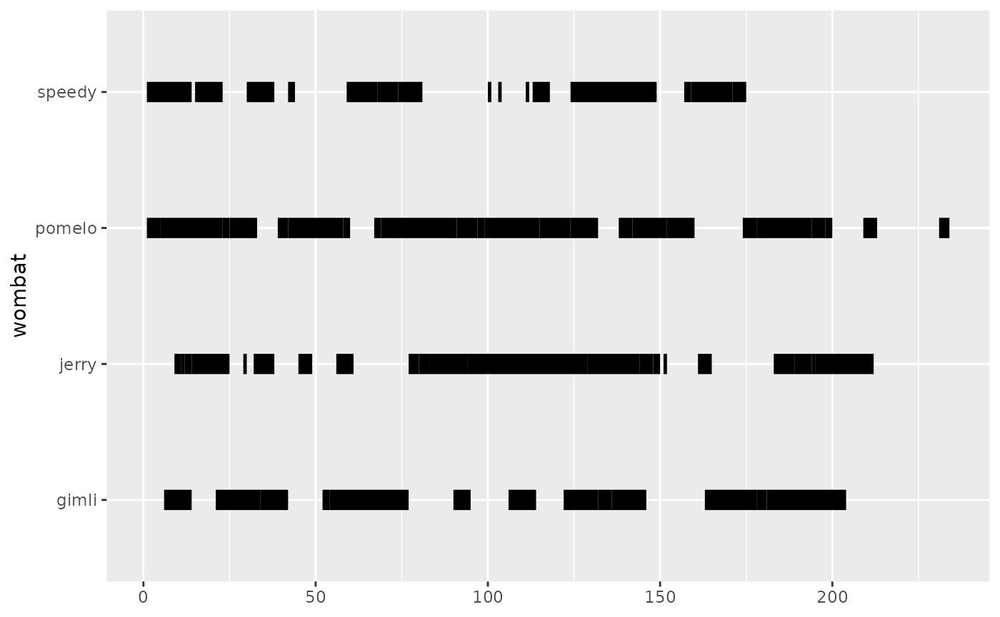
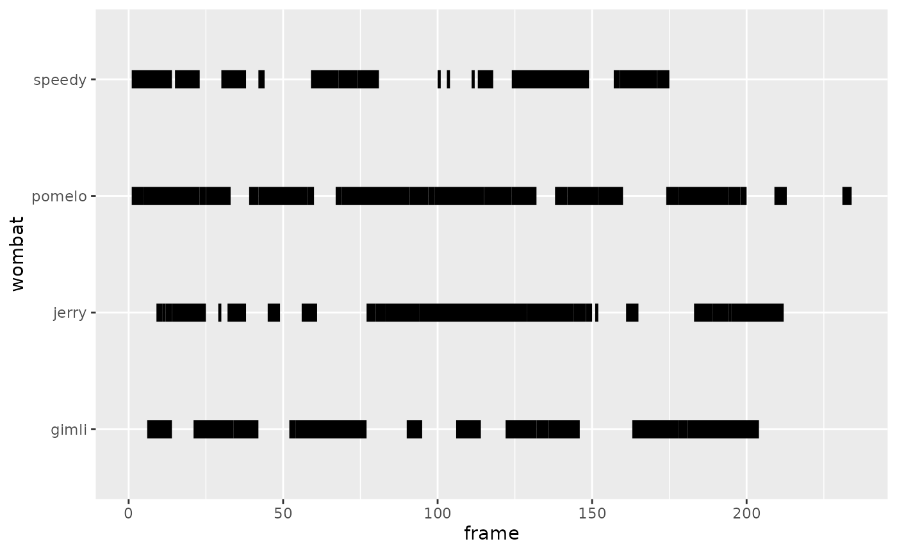
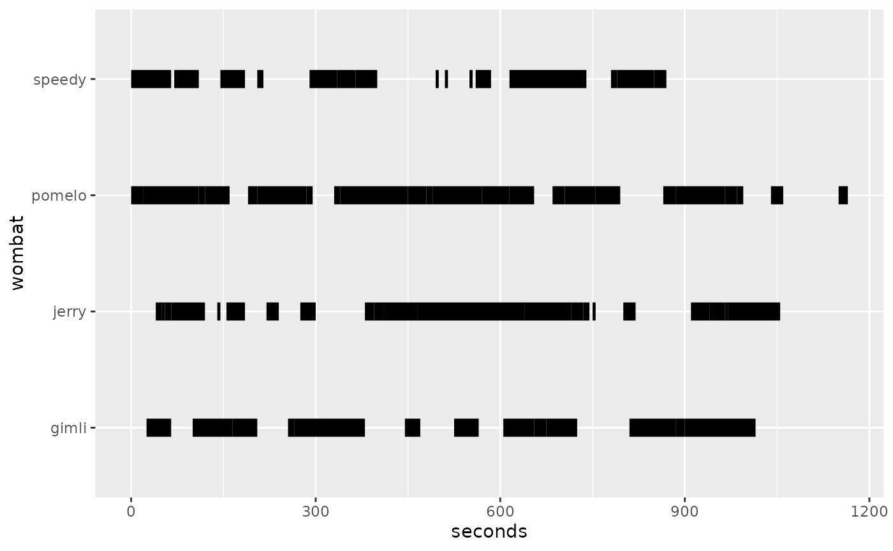
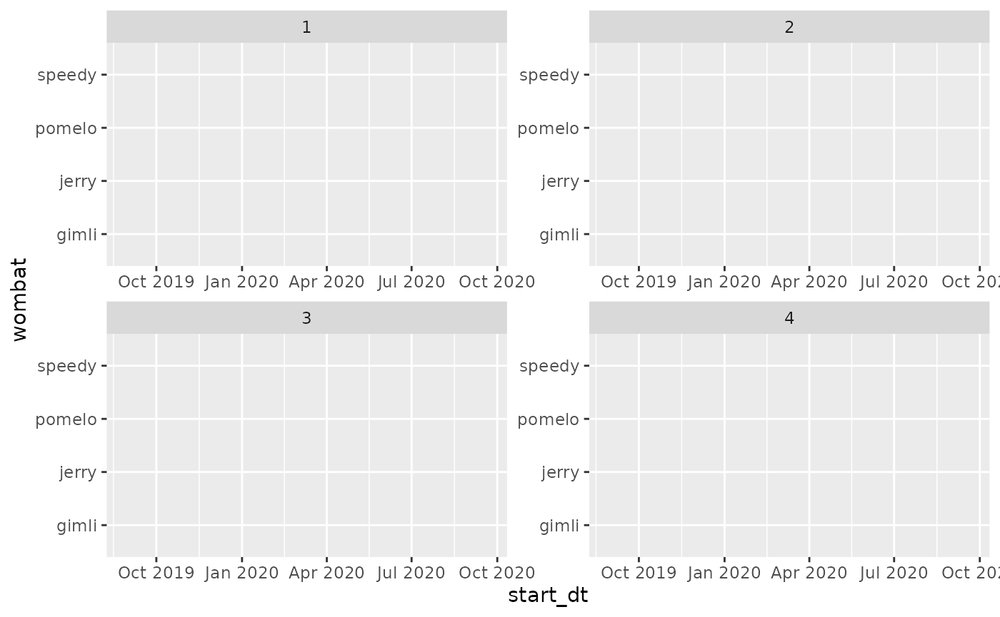
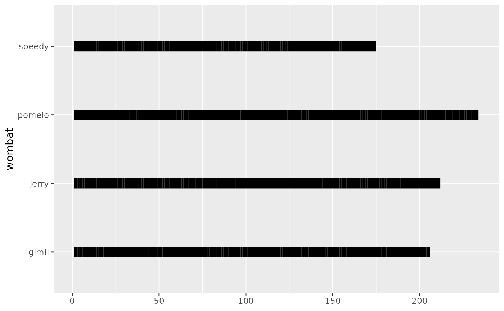
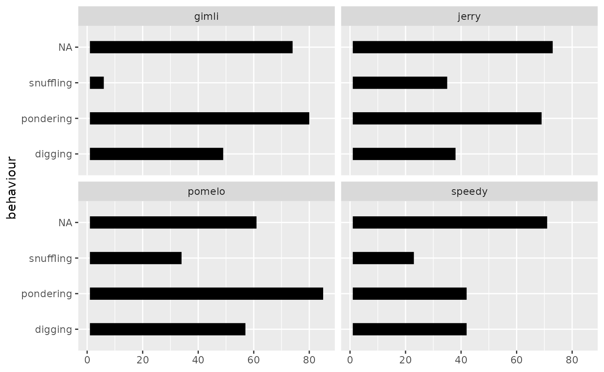

Basic Examples
examples.RmdEthogram Basics and heuristics
To plot an ethogram, we need to know:
-
xandxend -
yaxis - What observations must be grouped together
- How to color the segments (Optional)
However, at its bare minimum, users could potentially get away with just:
-
yaxis - What observations must be grouped together
The philosophy behind geom_ethogram() is to facilitate
the user experience. In most use cases, observations will be ordered
according to the way they were temporally collected. Thus, it is
reasonable for geom_ethogram() to assume y
observations are ordered in time and to use the implied order to
calculate x and xend using certain
heuristics.
Because we want to be transparent about guessing the temporal
structure, we provide verbose output when x and/or
xend are missing.
Ethograms can easily contain data aggregated from thousands of
observations (e.g., videos at 30fps). But guessing the interval forces
us to plot . To prevent unnecessary plotting,
geom_ethogram() aggregates continuous behaviors (i.e.,
instead of plotting 3 blocks of length 1, we plot 1 block of length 3).
This function is implemented by the behaviour aesthetic,
which allows us to free typical ggplot2 aesthethics such as
group and coluor for other uses.
Finally, geom_ethogram() will remove NAs in
your data by default. You can change this by setting
remove_na=FALSE (see NA
handling).
Basic Examples x Axis
This article contains information about how
geom_ethogram() handles the x axis computation
with different aes() calls and data types. For other
examples, see Using Color.
Using implied order
Frames are provided in implied order and geom_ethogram()
will guess interval of 1. The x axis will be in “sample
space” (i.e., 1:n_samples).
# Frames in implied order
ggplot(wombats, aes(y = wombat,
behaviour = behaviour)) +
geom_ethogram()
#> Warning: Using `size` aesthetic for lines was deprecated in ggplot2 3.4.0.
#> ℹ Please use `linewidth` instead.
The case above is the same as providing a frame = 1:n()
column (named after a putative video frame ID). The wombats
dataset already contains such a column.
# Frames of uniform duration 1
ggplot(wombats, aes(x = frame,
y = wombat, behaviour = behaviour)) +
geom_ethogram()
#> No observation interval provided, using guessed interval 1
#> No observation interval provided, using guessed interval 1
#> No observation interval provided, using guessed interval 1
#> No observation interval provided, using guessed interval 1
If the sampling period is known (e.g., 5 seconds), it’s easy to go
from frame (e.g., 1, 2, 3) to seconds (e.g.,
5, 10, 15 seconds).
# Observations at uniform intervals
ggplot(wombats,
aes(x = seconds,
y = wombat,
behaviour = behaviour)) +
geom_ethogram()
#> No observation interval provided, using guessed interval 5
#> No observation interval provided, using guessed interval 5
#> No observation interval provided, using guessed interval 5
#> No observation interval provided, using guessed interval 5
Handling Datetimes
# Observations at specified datetimes with uniform 5-second intervals
ggplot(wombats_duration, aes(x = start_dt, y = wombat, behaviour = behaviour)) +
geom_ethogram() +
facet_wrap(~ trial, scales = "free")
#> No observation interval provided, using guessed interval 13
#> Warning: Computation failed in `stat_etho()`
#> Caused by error in `rle()`:
#> ! 'x' must be a vector of an atomic type
#> No observation interval provided, using guessed interval 2
#> Warning: Computation failed in `stat_etho()`
#> Caused by error in `rle()`:
#> ! 'x' must be a vector of an atomic type
#> No observation interval provided, using guessed interval 16
#> Warning: Computation failed in `stat_etho()`
#> Caused by error in `rle()`:
#> ! 'x' must be a vector of an atomic type
#> No observation interval provided, using guessed interval 3
#> Warning: Computation failed in `stat_etho()`
#> Caused by error in `rle()`:
#> ! 'x' must be a vector of an atomic type
NA handling
This will produce a plot that looks strange compared with the other ones. It’s just that the NAs are also shown. If your data is complete, the plots in these examples will look similar to the plot show below and you might want to look into using color.
# Frames in implied order
ggplot(wombats, aes(y = wombat,
behaviour = behaviour)) +
geom_ethogram(remove_nas = FALSE) 
Ethogram becomes barplot
While using this package, it’s possible to avoid providing enough information for us to compute a proper ethogram. For example, we can accidentaly transform an ethogram into a bar plot.
ggplot(wombats,
aes(y = behaviour,
behaviour = behaviour,
group=behaviour)) +
geom_ethogram(remove_nas = F) +
facet_wrap(~wombat)
Summary
This article covered the basics of how geom_ethogram()
handles the x axis and the overall philosophy behind this
function.
Session Info
sessioninfo::session_info()
#> ─ Session info ───────────────────────────────────────────────────────────────
#> setting value
#> version R version 4.2.2 (2022-10-31)
#> os Ubuntu 22.04.1 LTS
#> system x86_64, linux-gnu
#> ui X11
#> language en
#> collate C.UTF-8
#> ctype C.UTF-8
#> tz UTC
#> date 2022-11-17
#> pandoc 2.19.2 @ /usr/bin/ (via rmarkdown)
#>
#> ─ Packages ───────────────────────────────────────────────────────────────────
#> package * version date (UTC) lib source
#> bslib 0.4.1 2022-11-02 [1] RSPM
#> cachem 1.0.6 2021-08-19 [1] RSPM
#> cli 3.4.1 2022-09-23 [1] RSPM
#> colorspace 2.0-3 2022-02-21 [1] RSPM
#> desc 1.4.2 2022-09-08 [1] RSPM
#> digest 0.6.30 2022-10-18 [1] RSPM
#> evaluate 0.18 2022-11-07 [1] RSPM
#> fansi 1.0.3 2022-03-24 [1] RSPM
#> farver 2.1.1 2022-07-06 [1] RSPM
#> fastmap 1.1.0 2021-01-25 [1] RSPM
#> fs 1.5.2 2021-12-08 [1] RSPM
#> ggethos * 0.0.0.9000 2022-11-17 [1] local
#> ggplot2 * 3.4.0 2022-11-04 [1] RSPM
#> glue 1.6.2 2022-02-24 [1] RSPM
#> gtable 0.3.1 2022-09-01 [1] RSPM
#> highr 0.9 2021-04-16 [1] RSPM
#> htmltools 0.5.3 2022-07-18 [1] RSPM
#> jquerylib 0.1.4 2021-04-26 [1] RSPM
#> jsonlite 1.8.3 2022-10-21 [1] RSPM
#> knitr 1.40 2022-08-24 [1] RSPM
#> labeling 0.4.2 2020-10-20 [1] RSPM
#> lifecycle 1.0.3 2022-10-07 [1] RSPM
#> magrittr 2.0.3 2022-03-30 [1] RSPM
#> memoise 2.0.1 2021-11-26 [1] RSPM
#> munsell 0.5.0 2018-06-12 [1] RSPM
#> pillar 1.8.1 2022-08-19 [1] RSPM
#> pkgconfig 2.0.3 2019-09-22 [1] RSPM
#> pkgdown 2.0.6 2022-07-16 [1] any (@2.0.6)
#> purrr 0.3.5 2022-10-06 [1] RSPM
#> R6 2.5.1 2021-08-19 [1] RSPM
#> ragg 1.2.4 2022-10-24 [1] RSPM
#> rlang 1.0.6 2022-09-24 [1] RSPM
#> rmarkdown 2.18 2022-11-09 [1] RSPM
#> rprojroot 2.0.3 2022-04-02 [1] RSPM
#> sass 0.4.2 2022-07-16 [1] RSPM
#> scales 1.2.1 2022-08-20 [1] RSPM
#> sessioninfo 1.2.2 2021-12-06 [1] any (@1.2.2)
#> stringi 1.7.8 2022-07-11 [1] RSPM
#> stringr 1.4.1 2022-08-20 [1] RSPM
#> systemfonts 1.0.4 2022-02-11 [1] RSPM
#> textshaping 0.3.6 2021-10-13 [1] RSPM
#> tibble 3.1.8 2022-07-22 [1] RSPM
#> utf8 1.2.2 2021-07-24 [1] RSPM
#> vctrs 0.5.0 2022-10-22 [1] RSPM
#> withr 2.5.0 2022-03-03 [1] RSPM
#> xfun 0.34 2022-10-18 [1] RSPM
#> yaml 2.3.6 2022-10-18 [1] RSPM
#>
#> [1] /home/runner/work/_temp/Library
#> [2] /opt/R/4.2.2/lib/R/site-library
#> [3] /opt/R/4.2.2/lib/R/library
#>
#> ──────────────────────────────────────────────────────────────────────────────